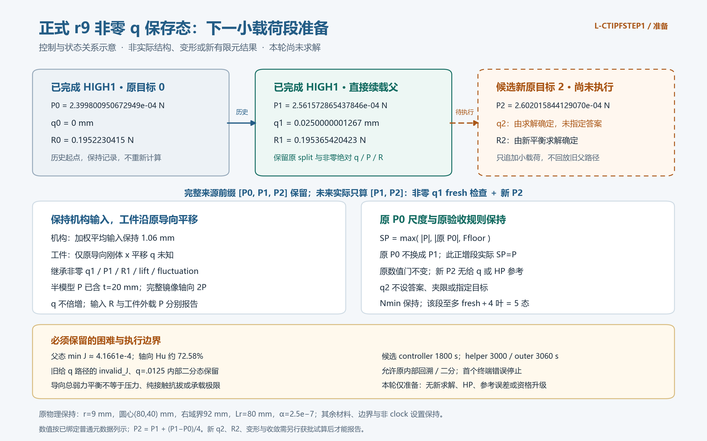

2026-10-24。核定mean1.06 mm正式r9非零q父、P2、原P0尺度、原门和资源；58生产源码不改。无新q2/R2、真实变形、参考误差或资格升级。

非实际几何/变形或新FE结果。初版minJ负号缺字未接受，改ASCII e-4后第二版通过；两次概念渲染/两次root检查均保记录。初版receipt和源码在author，初版坏图仅留本机作者历史，不作当前恢复依赖。
| P0 / root half N | 0.0002399800950672949 |
| P1 / segment half N | 0.0002561572865437846 |
| P2 / candidate half N | 0.000260201584412907 |
| q1 / mm | 0.025000000126731543 |
| R1 / N | 0.19536542042269825 |
| q2 / mm | 未知，未求解 |
| R2 / N | 未知，未求解 |
| mean / mm | 1.06 |
| ΔP / half N | 4.044297869122411e-06 |
| 原Nmin / half N | 1.011074467280606e-06 |
| 实际ΔP/Nmin | 3.9999999999999867 |
完整来源[P0,P1,P2]保留，未来只算[P1,P2]；非零绝对q/P/R与split原样继承，fresh check1且身份保持。半模型P已含20mm厚度，完整镜像轴向2P、q不倍增；输入R独立于工件P。q2由求解确定，不指定答案。
root P0与segment P1分开，本正增段实际SP=P，不能独证根尺度重置行为；保留原负P小模型证据。P2无给q/HP参考，不套旧P1工程误差界或造零差。原maxdepth4/Nmin保持；有效二分最多两级、至多fresh+4叶=5态是算术界，非实际路径。
| relative_free_force_max | 1e-09 |
| relative_body_force_max | 1e-09 |
| mean_abs_bound_mm | 1.0600000000000001e-10 |
| global_relative_max | 1e-06 |
| rigid_zero_abs_bound_mm | 8e-11 |
| all_J | finite and strictly positive |
| all_F_Hu_internal | finite as original controller |
| force_floor_half_N | 2.12e-07 |
| body_scale | max(abs(P),abs(root P0),Ffloor) |
| original_numerical_rules | All inherited tolerances/backtracking/Nmin/maxchecks/maxdepth; no new physical success gate |
适用全部fresh/内部/末态；本准备仅普通源核定与科学stat，实际payload准入及fresh力学尚待执行。
直接父minJ=0.00041660852936145333，max|Hu|=0.3181733832407684 /mm，轴向Hu约72.580590%。力控父2态/0失败/0二分；旧给q路径首次+.025 invalid_J回滚并接受0/.0125/.025三态，历史分开保留。原值历史、尖端/右介质原ID。导向总弱力平衡不授压力、纯接触抗拔、极限承载、稳定性或释放资格。
| controller_seconds | 1800 |
| science_total_seconds | 2100 |
| ordinary_check_total_seconds | 60 |
| display_and_root_QA_shared_seconds | 600 |
| helper_seconds | 3000 |
| outer_seconds | 3060 |
controller包含于science2100=2085进程+15清理；普通核对60=45+15；显示/QA共享600，viewer510+15、QA585秒前；helper3000=2100+60+600+240调度/清理/一次封存，outer3060最多51分钟。CPU/采样64GiB/四库cap16，viewer原8GiB。先例398.93秒不保证小步更快；原内部回溯/有界二分允许，首个终端错误停，保partial，无外部重试/延期/force/新HP/测试/生产修改。
候选卡待新授权、薄包装冻结和静审后才试算。成功后按卡输出实际×1变形、P–q与R、total/material/Hu与账本、尖端/右介质及保存J/Hu、全部Newton/trial/二分和真实N帧动画；当前无这些新实际结果。本交付不复制科学包/58源整树/旧媒体，恢复依赖见RECOVERY；stat可用不等于payload/fresh通过。